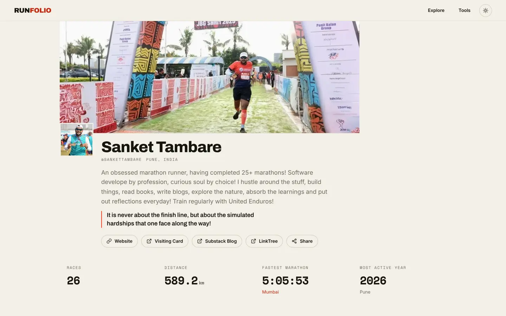
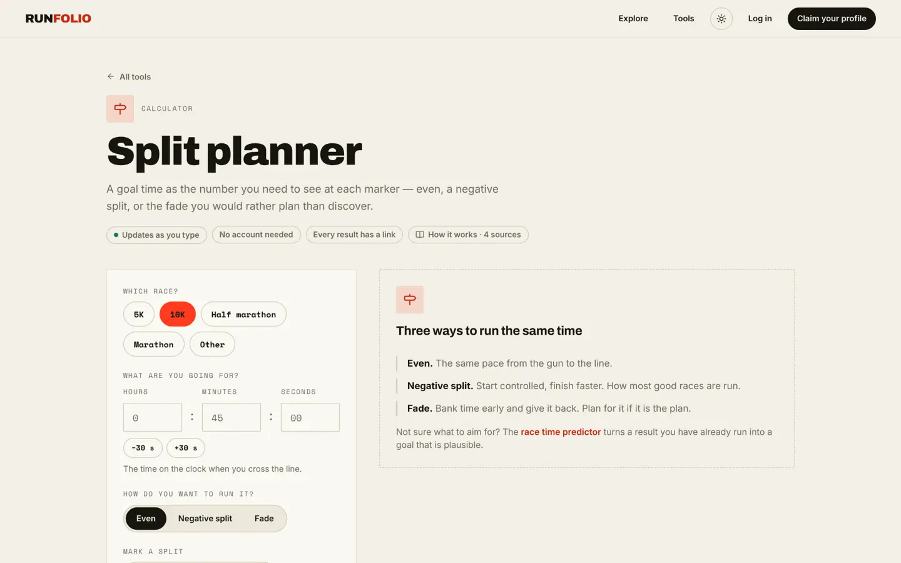
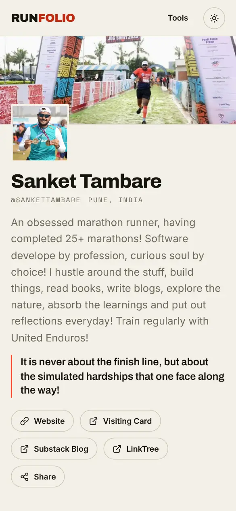
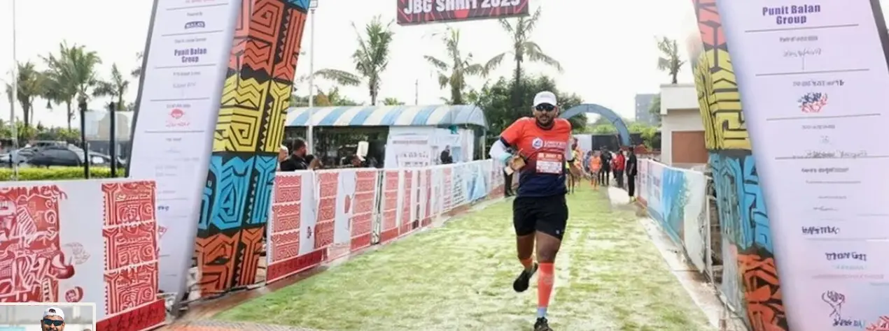

runfolio.in · live today
Pitch deck · 12 splits
The AI race companion for India's 2.5M runners.
Snap a finisher certificate and the race is logged. Get a race-day plan built for the course, the heat and your own history. Then a debrief, and a poster worth sharing.
The problem
India races more than ever. Runners remember less.
Scattered history
Results live with whoever timed the race. Nobody, the runner included, holds the complete record.
Guesswork race days
Pace charts ignore heat, humidity, hills and your own past splits. Runners find the fade at km 30 instead of planning for it.
No debrief
Strava and watches log every run but never understand a race, and many runners don't own a watch at all.
Why now
A running boom with no memory layer.
Tata Mumbai Marathon runners in 2025. It started with 19,000.
organised road races across India every year, many now in Tier-2 towns
Indian running-gear market by 2033, double 2024's $2.4B (IMARC)
year-on-year growth in running-club activity on Strava in India
Sources: Procam International via Forbes India and Local Samosa (2.5M participants a year); ThePrint (small-town marathons); Social Samosa; IMARC via Local Samosa. Organiser and industry figures are indicative, not audited.
Who it's for
Three start corrals.
The race runner
25–45, urban professional, 3–10 races a year from 5K to ultra. Phone-first, in a run club, often without a GPS watch.
- Wants
- A PB, a strong finish in the heat, and a journey worth showing.
- Pays for
- Unlimited AI imports, a plan and debrief for every race, HD posters.
Clubs & coaches
20–200 runners each, coordinated over WhatsApp and spreadsheets.
- Wants
- Every member's race history, plan and debrief in one roster.
- Pays for
- A monthly club seat.
Organisers & timers
Race organisers and timing companies whose results die in a PDF.
- Wants
- Results that get shared, and runners who come back next year.
- Pays for
- A branded poster and runner page for every finisher.
The solution
One loop. Five checkpoints.
Capture
Photograph a certificate, bib or results screenshot. The race is logged.
Gemini · visionPlan
Per-km pacing for this course, this forecast and your history.
Gemini · tools + groundingRace
A printed pace band, or a voice pacer in your ear.
Gemini LiveDebrief
Plan against actual: where you faded, why, and what to change.
Gemini · reasoningShare
A finisher poster and a portfolio page, which bring the next runner in.
Nano BananaEvery number comes from a deterministic, cited formula that's already live on RunFolio. Gemini explains it and personalises it. It never invents a pace.
Current prototype · runfolio.in
Already on the course.

Runner profile
Split planner
Shareable race portfolio. Photos first, PBs and stats computed for you, grid, ledger and stats views, all on one link.
Free tools, no login. Pace, splits, race predictor, training plans and TMM/Khadakwasla blocks, each with its method and sources cited.
Share cards generated per race, so links unfurl with your name and time.
Unit tests, row-level security on every table, and pages that work with JavaScript off.
AI feature 01 · Capture
Snap the certificate. It's logged.
Completion
PARTNER
Flash
· vision ·
AI feature 02 · Plan
A plan for this race, not a race.
Honest about the heat: about three minutes slower than the cool, flat-course maths, and on purpose.
How it's built
Gemini calls RunFolio's own cited calculators for every number, grounds on course elevation and the forecast, and reads your last five races' splits.
Then it explains
"You faded 6% after km 15 in your last two halves. Bank nothing early. The climb is where we hold back."
AI features 03–06 · After the line
Debrief. Coach. Share. Talk.
Plan vs actual
Finds where it went wrong and why: heat, the hill, or a start that was too fast.
Buildathon scopeAI coach
Knows your whole race history, with context caching to keep it cheap. It builds the next block and gives an injury caveat every time.
Next
Finisher posters
Your race photo plus your verified result, made into a poster. This is the moment people share, and what organisers pay for.
Buildathon scopeRace-day voice
A hands-free pacer on race morning and a spoken debrief afterwards. A year-in-review reel scored with Lyria.
RoadmapTechnical architecture
All on Google Cloud, Mumbai first.
Competition · business model
A different race. A clear way to pay.
| Strava + Runna | Watch apps | Registration sites | RunFolio | |
|---|---|---|---|---|
| Built around races, not runs | — | — | ½ | ● |
| Works with no watch | ½ | — | ● | ● |
| Whole history across organisers | ½ | ½ | — | ● |
| Heat-aware plan for a named race | — | ½ | — | ● |
| Cited, deterministic numbers | — | ½ | — | ● |
| Indian pricing and context | — | — | ● | ● |
● yes · ½ partly · — no. This is our reading of public features as of November 2026.
Free
Portfolio, manual logging, every calculator, and a few AI imports and plans a month. The growth engine.
RunFolio Pro
Unlimited imports, a plan and debrief for every race, the AI coach, HD posters. Or ₹149 a month.
Clubs & coaches
Roster of members' races, plans and debriefs.
Organisers
Branded posters and runner pages sent with results. Later: registration affiliates and sponsored cards.
Roadmap · founder · the ask
The finish line is the start corral.
Race portfolio + 6 cited tools
runfolio.in: profiles, photos, stats, share cards, /explore.
Certificate-to-race + race-day planner
Gemini on Vertex AI, Cloud Run workers, the first Nano Banana poster.
Move to Google Cloud · TMM 2027 pilot
Plans before Mumbai, debriefs and posters after it, for the runners in our network.
Pro, clubs, the first organiser
Gemini Live pacer, Hindi and Marathi debriefs, the first organiser paying per finisher.
Sanket Tambare
Software developer and marathon runner: 26 races, 589 km of them logged on RunFolio, and a training partner at United Enduros. He built RunFolio's live product alone, end to end.
The user and the builder are the same person.
Google AI and Cloud credits to run Gemini at race-day scale, mentors on Vertex AI, and introductions to two race organisers for a poster pilot.